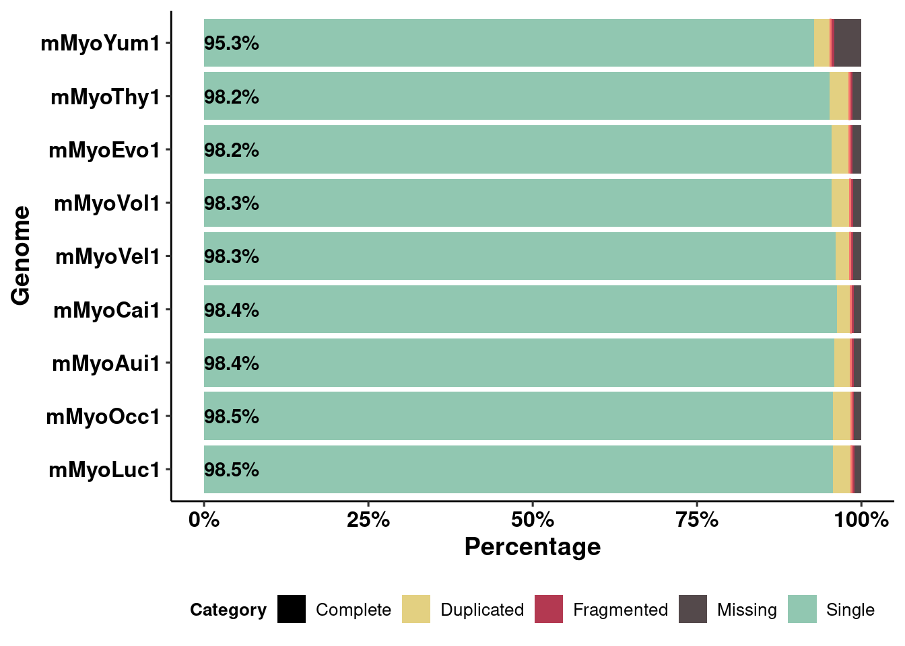

Last updated: 2023-10-23
Checks: 5 1
Knit directory: R_workflowr/analysis/
This reproducible R Markdown analysis was created with workflowr (version 1.7.1). The Checks tab describes the reproducibility checks that were applied when the results were created. The Past versions tab lists the development history.
Great job! The global environment was empty. Objects defined in the global environment can affect the analysis in your R Markdown file in unknown ways. For reproduciblity it’s best to always run the code in an empty environment.
The command set.seed(20230501) was run prior to running
the code in the R Markdown file. Setting a seed ensures that any results
that rely on randomness, e.g. subsampling or permutations, are
reproducible.
Great job! Recording the operating system, R version, and package versions is critical for reproducibility.
Nice! There were no cached chunks for this analysis, so you can be confident that you successfully produced the results during this run.
Great job! Using relative paths to the files within your workflowr project makes it easier to run your code on other machines.
Tracking code development and connecting the code version to the
results is critical for reproducibility. To start using Git, open the
Terminal and type git init in your project directory.
This project is not being versioned with Git. To obtain the full
reproducibility benefits of using workflowr, please see
?wflow_start.
library(tidyverse)── Attaching core tidyverse packages ──────────────────────── tidyverse 2.0.0 ──
✔ dplyr 1.1.3 ✔ readr 2.1.4
✔ forcats 1.0.0 ✔ stringr 1.5.0
✔ ggplot2 3.4.3 ✔ tibble 3.2.1
✔ lubridate 1.9.2 ✔ tidyr 1.3.0
✔ purrr 1.0.2
── Conflicts ────────────────────────────────────────── tidyverse_conflicts() ──
✖ dplyr::filter() masks stats::filter()
✖ dplyr::lag() masks stats::lag()
ℹ Use the conflicted package (<http://conflicted.r-lib.org/>) to force all conflicts to become errorslibrary(plotly)
Attaching package: 'plotly'
The following object is masked from 'package:ggplot2':
last_plot
The following object is masked from 'package:stats':
filter
The following object is masked from 'package:graphics':
layoutlibrary(ggpubr)
library(rtracklayer)Loading required package: GenomicRanges
Loading required package: stats4
Loading required package: BiocGenerics
Attaching package: 'BiocGenerics'
The following objects are masked from 'package:lubridate':
intersect, setdiff, union
The following objects are masked from 'package:dplyr':
combine, intersect, setdiff, union
The following objects are masked from 'package:stats':
IQR, mad, sd, var, xtabs
The following objects are masked from 'package:base':
anyDuplicated, aperm, append, as.data.frame, basename, cbind,
colnames, dirname, do.call, duplicated, eval, evalq, Filter, Find,
get, grep, grepl, intersect, is.unsorted, lapply, Map, mapply,
match, mget, order, paste, pmax, pmax.int, pmin, pmin.int,
Position, rank, rbind, Reduce, rownames, sapply, setdiff, sort,
table, tapply, union, unique, unsplit, which.max, which.min
Loading required package: S4Vectors
Attaching package: 'S4Vectors'
The following object is masked from 'package:plotly':
rename
The following objects are masked from 'package:lubridate':
second, second<-
The following objects are masked from 'package:dplyr':
first, rename
The following object is masked from 'package:tidyr':
expand
The following object is masked from 'package:utils':
findMatches
The following objects are masked from 'package:base':
expand.grid, I, unname
Loading required package: IRanges
Attaching package: 'IRanges'
The following object is masked from 'package:plotly':
slice
The following object is masked from 'package:lubridate':
%within%
The following objects are masked from 'package:dplyr':
collapse, desc, slice
The following object is masked from 'package:purrr':
reduce
Loading required package: GenomeInfoDbWarning: replacing previous import 'S4Arrays::makeNindexFromArrayViewport' by
'DelayedArray::makeNindexFromArrayViewport' when loading 'SummarizedExperiment'library(GenomicRanges)col.busco <- c(
Complete = 'black',
Single = "#91C7B1",
Duplicated = "#E3D081",
Fragmented = "#B33951",
Missing = "#54494B"
)
busco <- read_tsv("../data/BUSCOs.tsv") %>%
pivot_longer(-Genome) %>%
mutate(name = name %>% factor(levels=rev(c('Complete', 'Single', 'Duplicated', 'Fragmented', 'Missing', 'N'))))Rows: 9 Columns: 7
── Column specification ────────────────────────────────────────────────────────
Delimiter: "\t"
chr (1): Genome
dbl (6): Complete, Single, Duplicated, Fragmented, Missing, N
ℹ Use `spec()` to retrieve the full column specification for this data.
ℹ Specify the column types or set `show_col_types = FALSE` to quiet this message.scale.completeness <- busco %>%
filter(name == "Complete") %>%
select(Genome, value) %>%
arrange(desc(value)) %>%
pull(Genome)
busco <- busco %>%
mutate(Genome = Genome %>% factor(levels=scale.completeness))
p.busco <- busco %>%
filter(!name %in% c("N", "Complete")) %>%
ggplot(
aes(
x = Genome,
fill = name,
y = value
)
) +
geom_bar(position="stack", stat = "identity") +
geom_text(
data = busco %>% filter(name == "Complete"),
mapping = aes(label=value %>% str_c(., "%"), y=0),
hjust=0,
# family='helvetica',
fontface='bold'
) +
geom_errorbar(
data = busco %>% filter(name == "Complete"),
mapping = aes(
x = Genome,
color=name,
y=value,
ymin=value,
ymax=value
),
stat= 'identity',
fill=NA,
inherit.aes = F,
show.legend = F
) +
scale_fill_manual("Category", values = col.busco) +
scale_y_continuous("Percentage", labels = scales::percent_format(scale = 1, accuracy=1)) +
coord_flip() +
theme_pubr() +
labs_pubr() +
theme(legend.position = "bottom")Warning in geom_errorbar(data = busco %>% filter(name == "Complete"), mapping =
aes(x = Genome, : Ignoring unknown parameters: `fill`p.busco
p.busco %>% ggsave(plot=., filename = "../output/BUSCO.pdf", width = 6, height = 3.71, dpi=900, units = "in")
sessionInfo()R version 4.3.1 (2023-06-16)
Platform: x86_64-pc-linux-gnu (64-bit)
Running under: Ubuntu 22.04.3 LTS
Matrix products: default
BLAS: /usr/lib/x86_64-linux-gnu/blas/libblas.so.3.10.0
LAPACK: /usr/lib/x86_64-linux-gnu/lapack/liblapack.so.3.10.0
locale:
[1] LC_CTYPE=C.UTF-8 LC_NUMERIC=C LC_TIME=C.UTF-8
[4] LC_COLLATE=C.UTF-8 LC_MONETARY=C.UTF-8 LC_MESSAGES=C.UTF-8
[7] LC_PAPER=C.UTF-8 LC_NAME=C LC_ADDRESS=C
[10] LC_TELEPHONE=C LC_MEASUREMENT=C.UTF-8 LC_IDENTIFICATION=C
time zone: America/Los_Angeles
tzcode source: system (glibc)
attached base packages:
[1] stats4 stats graphics grDevices utils datasets methods
[8] base
other attached packages:
[1] rtracklayer_1.58.0 GenomicRanges_1.52.1 GenomeInfoDb_1.36.4
[4] IRanges_2.34.1 S4Vectors_0.38.2 BiocGenerics_0.46.0
[7] ggpubr_0.6.0 plotly_4.10.2 lubridate_1.9.2
[10] forcats_1.0.0 stringr_1.5.0 dplyr_1.1.3
[13] purrr_1.0.2 readr_2.1.4 tidyr_1.3.0
[16] tibble_3.2.1 ggplot2_3.4.3 tidyverse_2.0.0
loaded via a namespace (and not attached):
[1] bitops_1.0-7 rlang_1.1.1
[3] magrittr_2.0.3 git2r_0.32.0
[5] matrixStats_1.0.0 compiler_4.3.1
[7] systemfonts_1.0.4 vctrs_0.6.3
[9] pkgconfig_2.0.3 crayon_1.5.2
[11] fastmap_1.1.1 backports_1.4.1
[13] XVector_0.40.0 labeling_0.4.3
[15] utf8_1.2.3 Rsamtools_2.16.0
[17] promises_1.2.1 rmarkdown_2.25
[19] tzdb_0.4.0 ragg_1.2.5
[21] bit_4.0.5 xfun_0.40
[23] zlibbioc_1.46.0 cachem_1.0.8
[25] jsonlite_1.8.7 later_1.3.1
[27] DelayedArray_0.26.7 BiocParallel_1.34.2
[29] broom_1.0.5 parallel_4.3.1
[31] R6_2.5.1 bslib_0.5.1
[33] stringi_1.7.12 car_3.1-2
[35] jquerylib_0.1.4 Rcpp_1.0.11
[37] SummarizedExperiment_1.30.2 knitr_1.44
[39] httpuv_1.6.11 Matrix_1.6-1.1
[41] timechange_0.2.0 tidyselect_1.2.0
[43] rstudioapi_0.15.0 abind_1.4-5
[45] yaml_2.3.7 codetools_0.2-19
[47] lattice_0.21-8 Biobase_2.60.0
[49] withr_2.5.0 evaluate_0.21
[51] Biostrings_2.68.1 pillar_1.9.0
[53] MatrixGenerics_1.12.3 carData_3.0-5
[55] generics_0.1.3 vroom_1.6.3
[57] rprojroot_2.0.3 RCurl_1.98-1.12
[59] hms_1.1.3 munsell_0.5.0
[61] scales_1.2.1 glue_1.6.2
[63] lazyeval_0.2.2 tools_4.3.1
[65] BiocIO_1.10.0 data.table_1.14.8
[67] ggsignif_0.6.4 GenomicAlignments_1.36.0
[69] fs_1.6.3 XML_3.99-0.14
[71] grid_4.3.1 colorspace_2.1-0
[73] GenomeInfoDbData_1.2.10 restfulr_0.0.15
[75] cli_3.6.1 textshaping_0.3.6
[77] workflowr_1.7.1 fansi_1.0.5
[79] S4Arrays_1.0.6 viridisLite_0.4.2
[81] gtable_0.3.4 rstatix_0.7.2
[83] sass_0.4.7 digest_0.6.33
[85] rjson_0.2.21 htmlwidgets_1.6.2
[87] farver_2.1.1 htmltools_0.5.6
[89] lifecycle_1.0.3 httr_1.4.7
[91] bit64_4.0.5